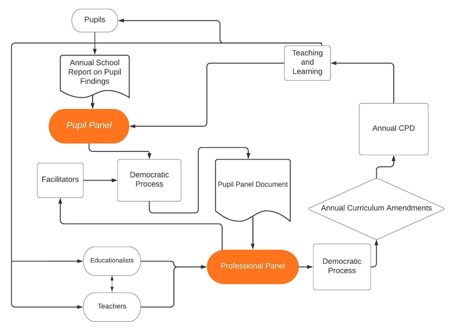

STAKEHOLDERS AND CURRICULUM DEVELOPMENT
We propose that curriculum content is decided through an ongoing democratic process, representing the views of both education professionals and pupils.
This could look something like the following:
Teachers registered with the GTCS can opt-in to voting on candidates to join a representative panel. Half of these candidates are teachers, and half of these candidates are educationalist academics. There must be explicit and consistent encouragement and support (perhaps including financial support) for candidates from a diverse range of socio-economic and cultural backgrounds to be represented. Panel members will represent each constituent region of Scotland. The proportion of panel members teaching at independent schools cannot exceed the proportion of the Scottish school population enrolled at independent schools. The proportion of panel members teaching at special schools, or specialising in a related academic area, must be at least equal to the proportion of pupils in special schools, units, and/or who require additional support for learning in Scotland. This professional panel would convene each year to propose and vote on amendments to the knowledge-based content of the curriculum, to be implemented in the next academic year. Yearly amendments to the curriculum would require teachers to engage in relevant annual Continued Professional Development (CPD). This will ensure that the knowledge content of the curriculum remains flexible to changes in the development and instrumentalisation of digital technologies.
Each year, the pupils at every Scottish school will be supported by teachers to produce a report on the digital literacy knowledge produced (or co-produced) through learner-centred pedagogy. These pupil reports may include reflections on digital literacy project work, on critical engagement with issues related to digital literacy or on technological developments, on interschool and international knowledge building work through pupil-led online learning spaces, or, on how technology has been used to support learning and inclusion. Online Learning Spaces (OLS) could be central to this process.
Additionally, all pupils in Scottish schools can opt-in to voting for candidates to join a representative panel. There will be at least one panel-member representing each year group, from P1-S6, and panel members will represent each constituent region of Scotland. The proportion of panel members attending independent schools cannot exceed the proportion of the Scottish school population enrolled at independent schools. The proportion of panel members attending special schools, units, and/or who require additional support for learning must be at least equal to the percentage of that demographic in the Scottish school population. Facilitators will be elected by the professional panel to support the pupil panel in aggregate data from the annual pupil reports, and synthesise this information to produce a report on the findings of the learner-centred portion of the curriculum. These reports will be used by the professional council to inform their decisions about amendments to the knowledge-based portion of the curriculum.
